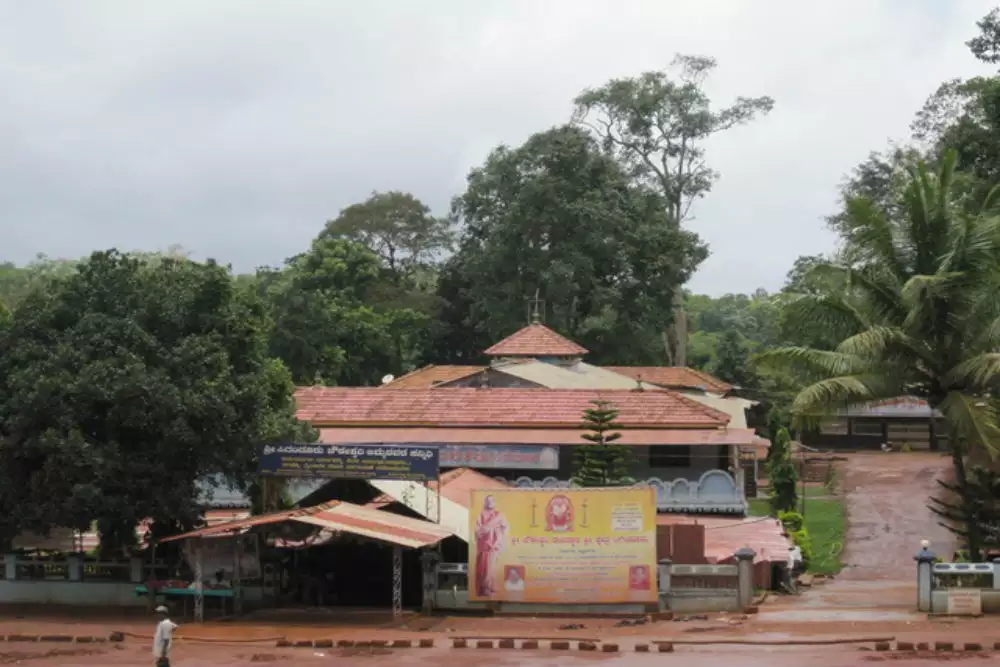
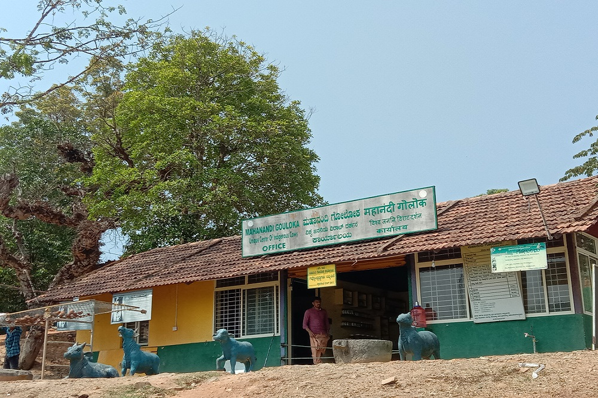
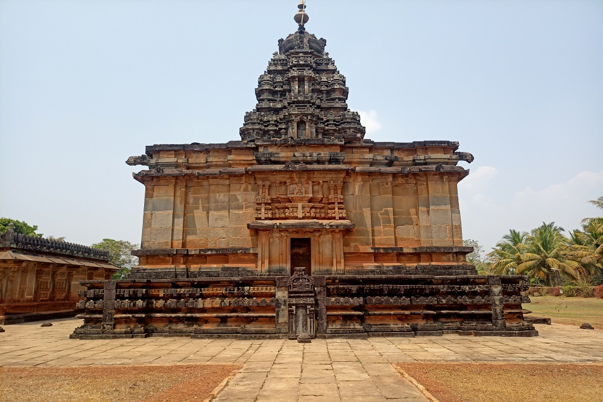
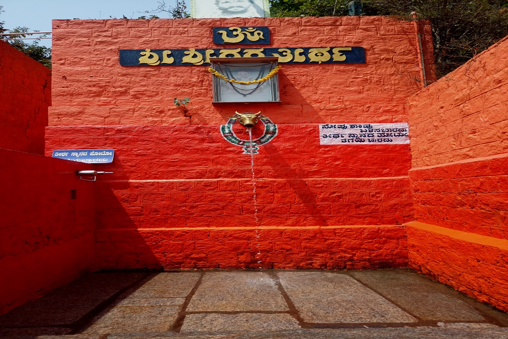
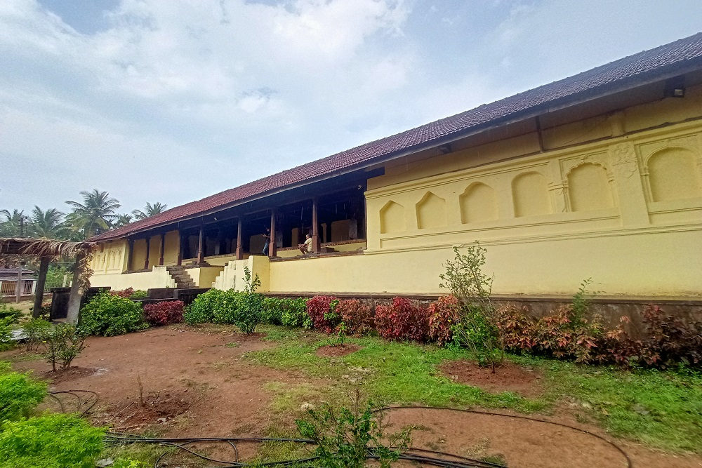
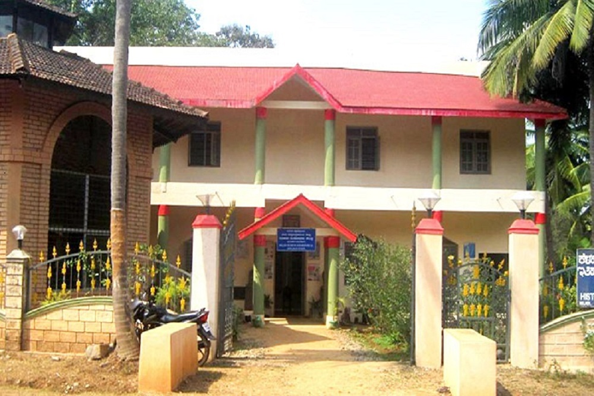
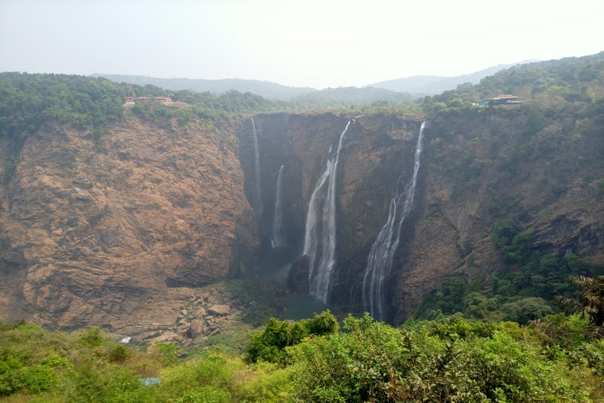
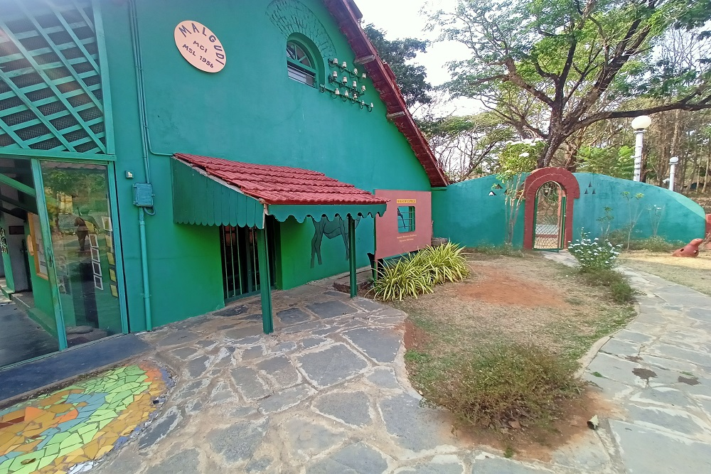

A Tour to Shivamogga
The gateway of malnad
Sri Sigandur Chowdeshwari Temple
the temple has a rich heritage and history of the godess sri chowdeshwari. Shree Devi kshethra was built in the 18th century. Sigandur kshethra is near Thumari, 42 km from Sagar town.
The village is surrounded on three sides by the backwaters of Linganamakki dam, formed by the Sharavathi River.Sigandur is about 40 km from its taluk headquarters, Sagara town.

Sri Sigandur Chowdeshwari Temple

Mahanandi Gouloka

Shri Aghoreshwara Devalaya - Ikkeri

Sri Sridharashrama - Varadapura

Rameshwara temple - Keladi

Keladi Museum

The Jog falls
